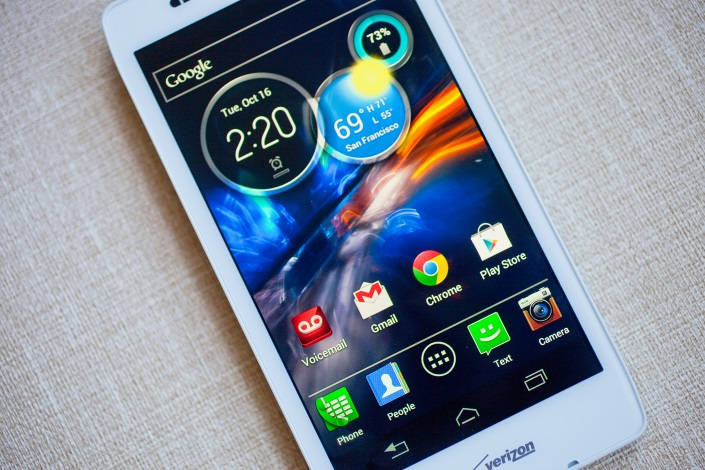

Android 4.4 Kit Kat
Com esta versão do sistema operacional, é possível aproveitar mais a tela do celular, já que os botões virtuais podem desaparecer da tela caso você não esteja usando. Com isso, os desenvolvedores também saem ganhando, já que podem criar aplicativos que usem toda a tela. Mais um diferencial do Android 4.4 Kit Kat é a integração do aplicativo Hangouts com mensagens de texto SMS. Assim você pode visualizar as mensagens pelo app. O smartphone com esta versão também vem com a tecnologia Google Cloud Print, que possibilita se conectar a impressoras compatíveis (via Wi-Fi) e imprimir alguns documentos, como fotos tiradas do seu celular.
